推导表达式（利用for，一个一个地放入数据）
列表推导
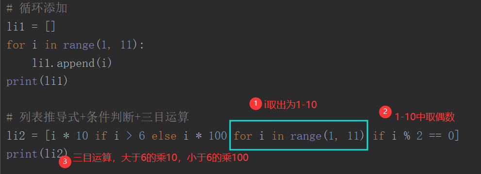
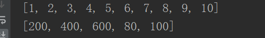
集合推导
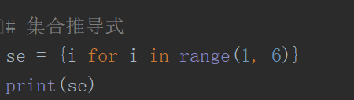
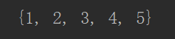
字典推导
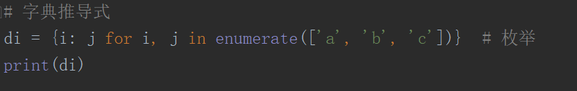
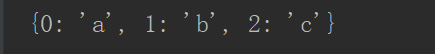
迭代器
迭代
for 迭代变量 in 可迭代对象
每一次循环都会自动让 “迭代变量” 指向 “下一个元素”
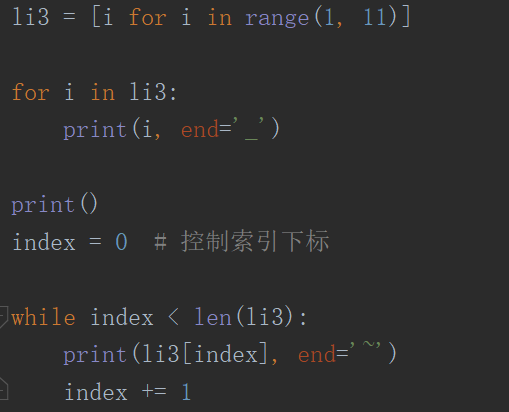
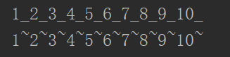
生成迭代器的方法
iter() __iter__()
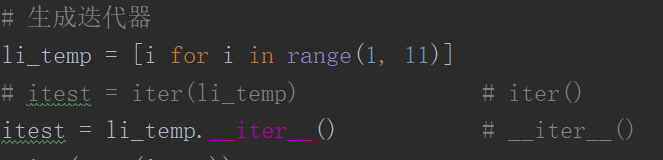
取值
next(iterator) iterator.__next__()
注意：如果迭代器值取完之后，会返回 StopIteration 错误
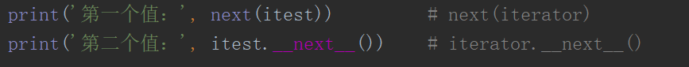
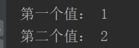
迭代器对象本身需要支持以下两种方法，它们一起构成迭代器协议
iterator.__iter__() iterator.__next__()
从可迭代对象生成一个迭代器
迭代器=iter(可迭代对象)
下个值=next(迭代器)
for实现原理
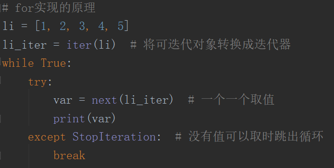
自定义迭代器
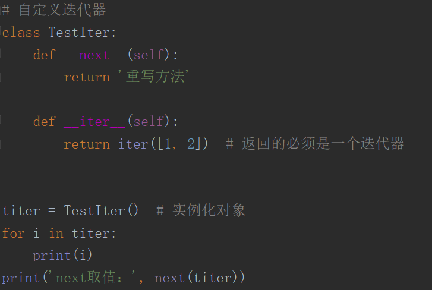
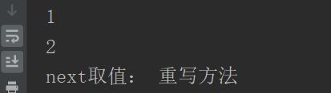
区分：可迭代对象 与 迭代器
可迭代对象没有 next 方法
迭代对象有 next方法
生成器
生成器不会一下子把所以内容生成出来，在需要用的时候用next（）去生成
方法 一：列表推导式的 [ ] 改成 ( )
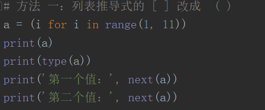
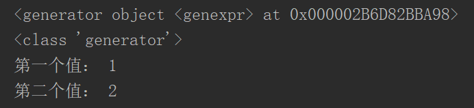
方法 二：在函数里面加上yield
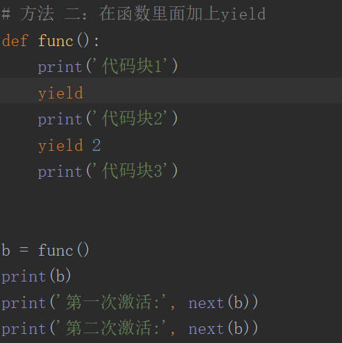
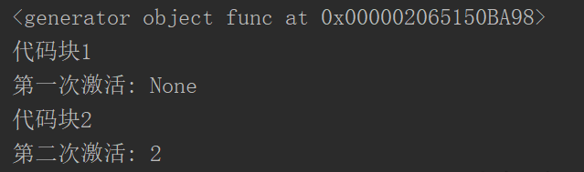
yield运行规则
yiled 一个对象 1、返回这个对象 2、暂停这个函数 3、等待下次next重新激活
注意
yield 表达式只能在函数中使用
yield 表达式可以使函数成为一个生成器
yield 可以返回表达式结果，并且暂定函数执行,直到next激活下一个yield
简单点理解生成器就是一个迭代器
Python使用生成器对延迟操作提供了支持
所谓延迟操作，是指在需要的时候才产生结果，而不是立即产生结果,从而节省大量的空间,这也是生成器的主要好处
模块和包
可以使用三种方法导入
import 包名
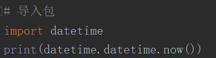
from 包名 import 模块名1，模块名2，...
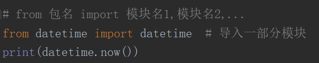
在同一目录下，可直接使用上面两种方法去导入
在不同目录下，需要使用 sys.path.append('path') 添加路径，把路径添加到 sys.path 中
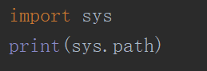
模块
在python中，模块就是一个py文件
包和包管理
包概念：把很多模块放到一个文件夹里面，就可以形成一个包
包管理：当把很多模块放在文件中时，为了方便引用包中的模块，引入了包管理
__init__.py
在包管理中，加入此模块，则包名可以直接通过属性访问的方式，访问此模块内的对象
python2中必须加，pyhton3中不加也能使用
规范是要加上，文件内容可以为空
相对路径导入
在包管理中，可分别来导入同层和上一层的模块以通过 . (一个点) 和 .. (两个点）
使用方法：from .module(..module) import obj
引入作用：在包中，如果包中模块要导入同一包中的其他模块，就必须使用此方法导入
引入之后的影响：当一个模块中出现此导入方式，则该模块不能被直接运行，只能被导入